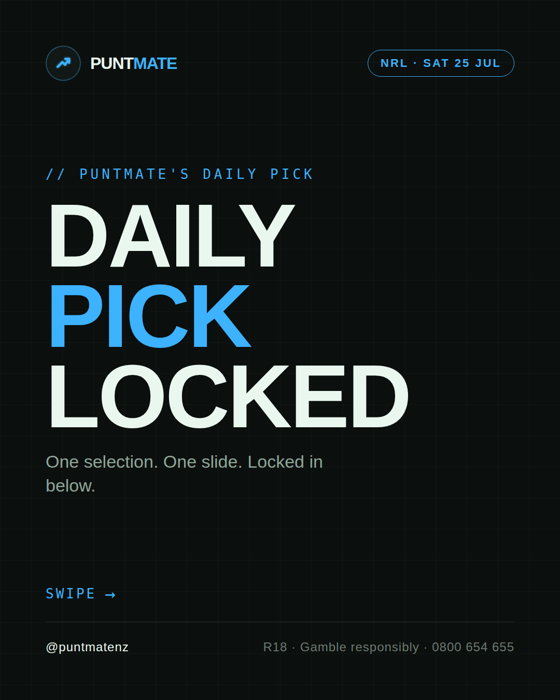
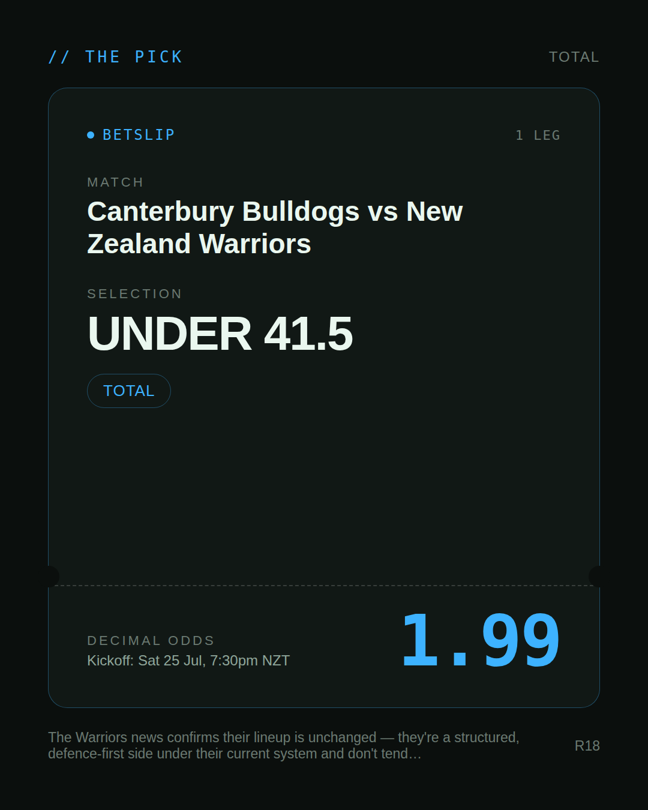
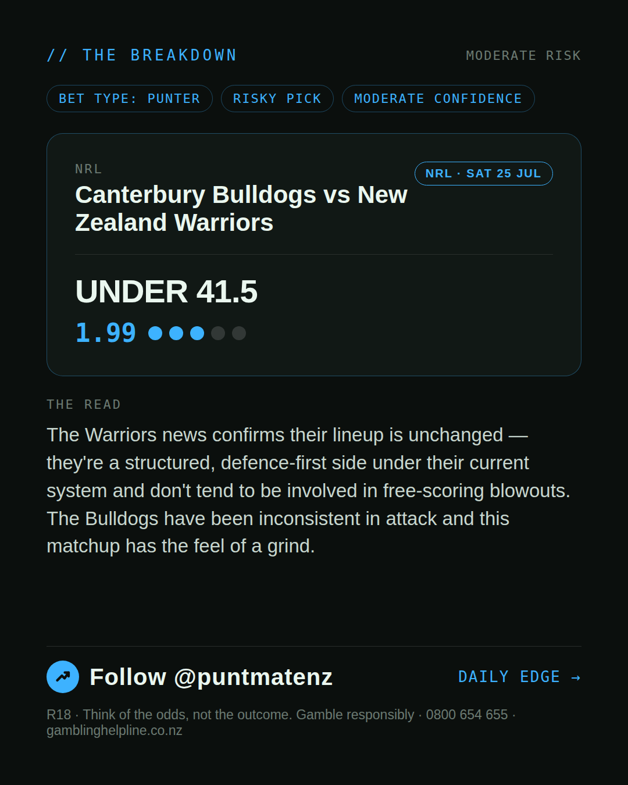
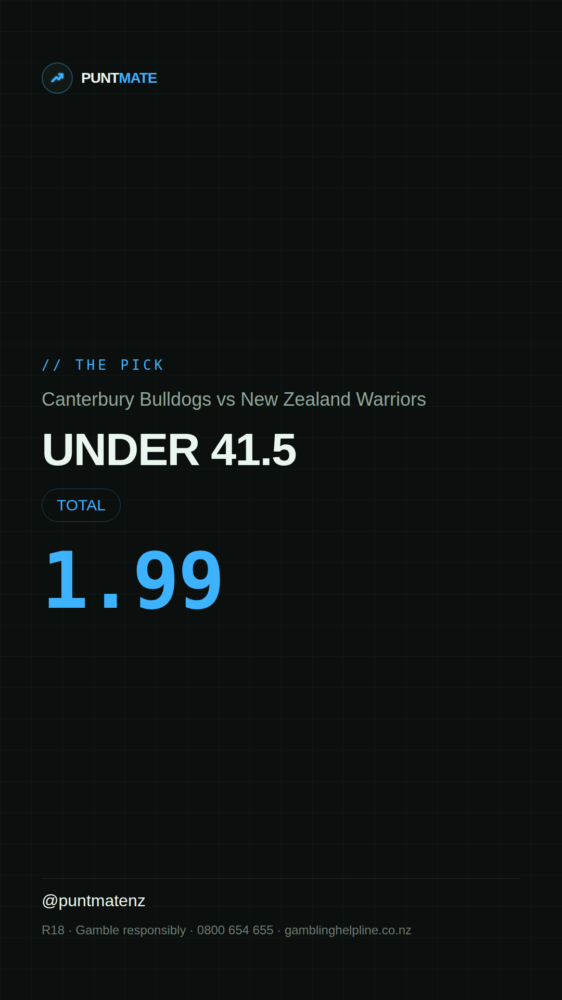

*🎯 PUNTMATE NZ — NRL* 🏟 Canterbury Bulldogs vs New Zealand Warriors *PICK:* UNDER 41.5 *ODDS:* 1.99 (Total) *BET TYPE: PUNTER* _The Warriors news confirms their lineup is unchanged — they're a structured, defence-first side under their current system and don't tend to be involved in free-scoring blowouts. The Bulldogs have been inconsistent in attack and this matchup has the feel of a grind._ ────────────────── 📲 Join Telegram for daily picks R18 · Gamble responsibly · Problem Gambling Foundation NZ: 0800 664 262
🎯 NRL — Canterbury Bulldogs vs New Zealand Warriors UNDER 41.5 @ 1.99 (Total) BET TYPE: PUNTER Solid touch here. Not a lock, but the value's real and the form backs it up. The Warriors news confirms their lineup is unchanged — they're a structured, defence-first side under their current system and don't tend to be involved in free-scoring blowouts. The Bulldogs have been inconsistent in attack and this matchup has the feel of a grind. Follow for daily value picks → @puntmatenz Problem Gambling Foundation NZ: 0800 664 262 #PuntmateNZ #SportsBetting #NZTAB #NRL
| has_pick | True |
| pick_id | 2026-07-24_Canterbury_Bulldogs_vs_New_Zealand_Warriors |
| run_id | 30123580840 |
| generated_at | 2026-07-24T20:21:40.906768+00:00 |
| post_date | 2026-07-24 |
| match | Canterbury Bulldogs vs New Zealand Warriors |
| sport | rugbyleague_nrl |
| sport_label | NRL |
| market | Total |
| selection | UNDER 41.5 |
| odds | 1.99 |
| bet_type | PUNTER_BET |
| bet_type_label | BET TYPE: PUNTER |
| bet_type_reason | Solid touch here. Not a lock, but the value's real and the form backs it up. The Warriors news confirms their lineup is unchanged — they're a structured, defence-first side under their current system and don't tend to be involved in free-scoring blowouts. The Bulldogs have been inconsistent in attack and this matchup has the feel of a grind. |
| classification | RISKY_PICK |
| risk | RISKY_PICK |
| confidence | MODERATE |
| confidence_label | MODERATE |
| final_explanation | The Warriors news confirms their lineup is unchanged — they're a structured, defence-first side under their current system and don't tend to be involved in free-scoring blowouts. The Bulldogs have been inconsistent in attack and this matchup has the feel of a grind. |
| public_caution | Keep this one light — the value's there but so is the uncertainty. |
| theme | night |
| carousel_paths | ['data/review/2026-07-24_Canterbury_Bulldogs_vs_New_Zealand_Warriors/cover.png', 'data/review/2026-07-24_Canterbury_Bulldogs_vs_New_Zealand_Warriors/tip.png', 'data/review/2026-07-24_Canterbury_Bulldogs_vs_New_Zealand_Warriors/breakdown.png'] |
| carousel_urls | ['https://raw.githubusercontent.com/kingofthecastle24/puntmate/main/data/cards/2026-07-24_Canterbury_Bulldogs_vs_New_Zealand_Warriors_night_1_cover.png', 'https://raw.githubusercontent.com/kingofthecastle24/puntmate/main/data/cards/2026-07-24_Canterbury_Bulldogs_vs_New_Zealand_Warriors_night_2_tip.png', 'https://raw.githubusercontent.com/kingofthecastle24/puntmate/main/data/cards/2026-07-24_Canterbury_Bulldogs_vs_New_Zealand_Warriors_night_3_breakdown.png'] |
| story_path | data/review/2026-07-24_Canterbury_Bulldogs_vs_New_Zealand_Warriors/story.png |
| story_url | https://raw.githubusercontent.com/kingofthecastle24/puntmate/main/data/cards/2026-07-24_Canterbury_Bulldogs_vs_New_Zealand_Warriors_night_story.png |
| intended_platforms | ['telegram', 'instagram_feed', 'instagram_story', 'facebook'] |
| workflow_state | GENERATED |
| has_punter_multi | False |
| has_gambler_multi | False |
| has_degenerate_multi | False |